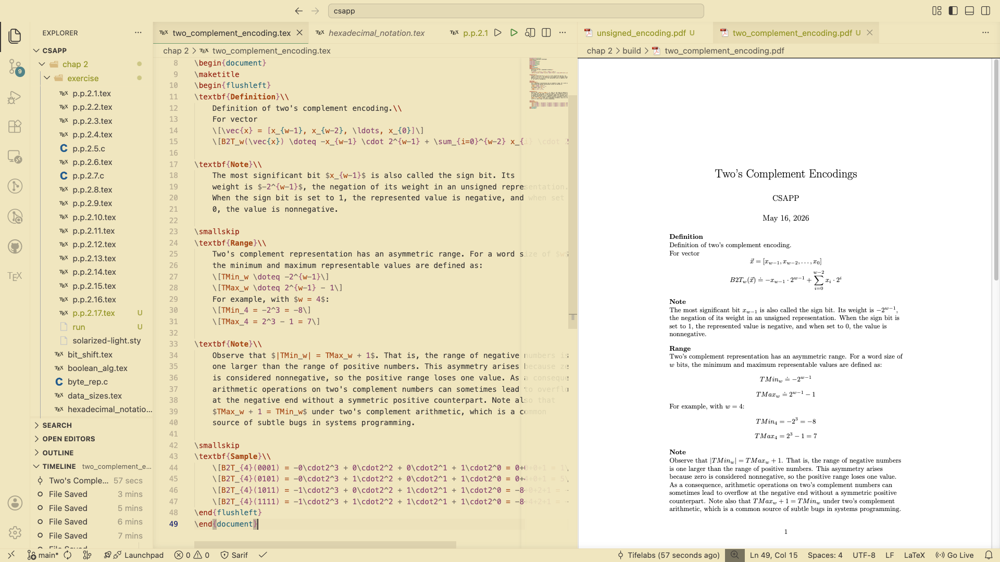

Why I switched to LaTeX for my notes
I have been writing a lot of notes and documents recently using LaTeX, and it has quietly become one of the better workflow decisions I have made this year.
The clearest win is math. Having a proper way to render formulas and text notation; without worrying about rendering or format errors, it makes a real difference when working through anything technical. Markdown is great for prose, but it was never designed for equations.
It has its own learning, but it is genuinely not steep. Most of the time I am looking up a package or a style command on here, and the feedback loop, writing source, compiling, seeing the rendered output, is quite satisfying.

One of my interesting time is trying rendering Amdahl's formula both in latex and markdown
\begin{equation*} T_{\text{new}}= (1 - \alpha)T_{\text{old}} + \frac{(\alpha T{\text{old}}) }{k} \end{equation*} \begin{align*} &= T_{\text{old}}[(1 - \alpha) + \frac{\alpha}{k}] \end{align*} \begin{align*} S &= \frac{1}{(1 - \alpha) + \alpha + \frac{\alpha}{k}} \end{align*}
I have been a Markdown user for a long time. Switching to LaTeX for anything that involves notation or structure does not feel like a downgrade, it feels like picking up the right tool. The output is precise, consistent, and genuinely pleasant to read.
If you spend any meaningful time with math, physics, programming or structured technical writing, it is worth trying. The first few minutes of setup pays for itself quickly.